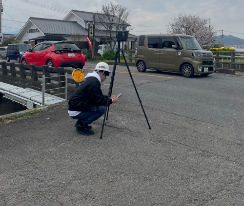
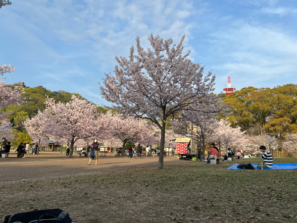
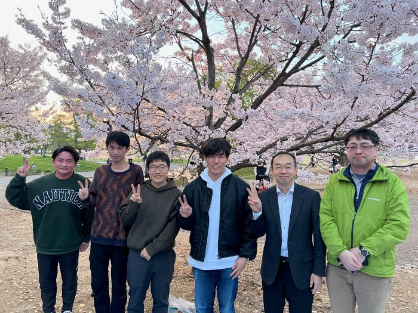

mizukan
イベント
お花見
4月5日(金), 新研究室メンバーでお花見をしました!
事の発端は当日の午後，その日は高井橋を撮影し，３次元点群データを作成していました．
帰りに西林寺で記念撮影をしたのですが，この時，藤森先生がヘルメットを取り忘れ．．．．


高井橋の撮影後，藤森先生の提案で急遽花見を開催することに．．．

森脇先生，藤森先生，四回生の合計６名が参加し満開の桜の下，
楽しい時間を過ごすことができました．
花見はコロナ禍の影響で数年できませんでしたが，今年は開催されたことで先生方や研究室の仲間たちと交流を深めることができる良い機会となったと感じます！
これからよろしくお願いします！('v`ｂ)
文責 前田